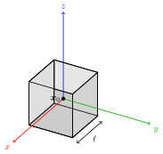
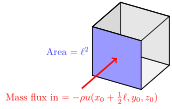
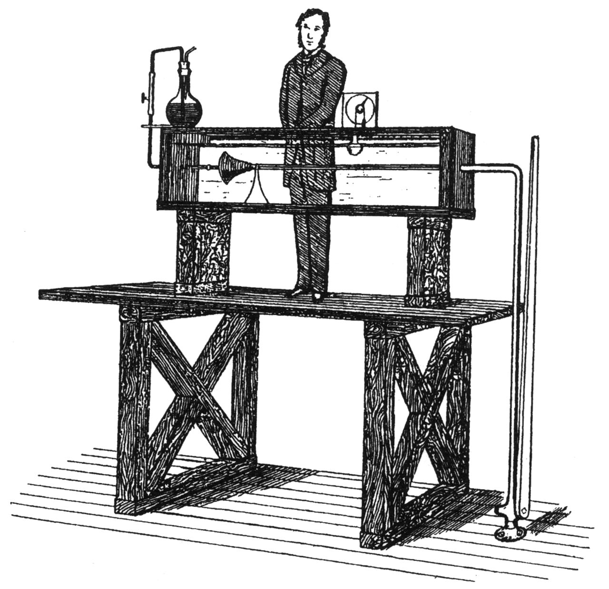
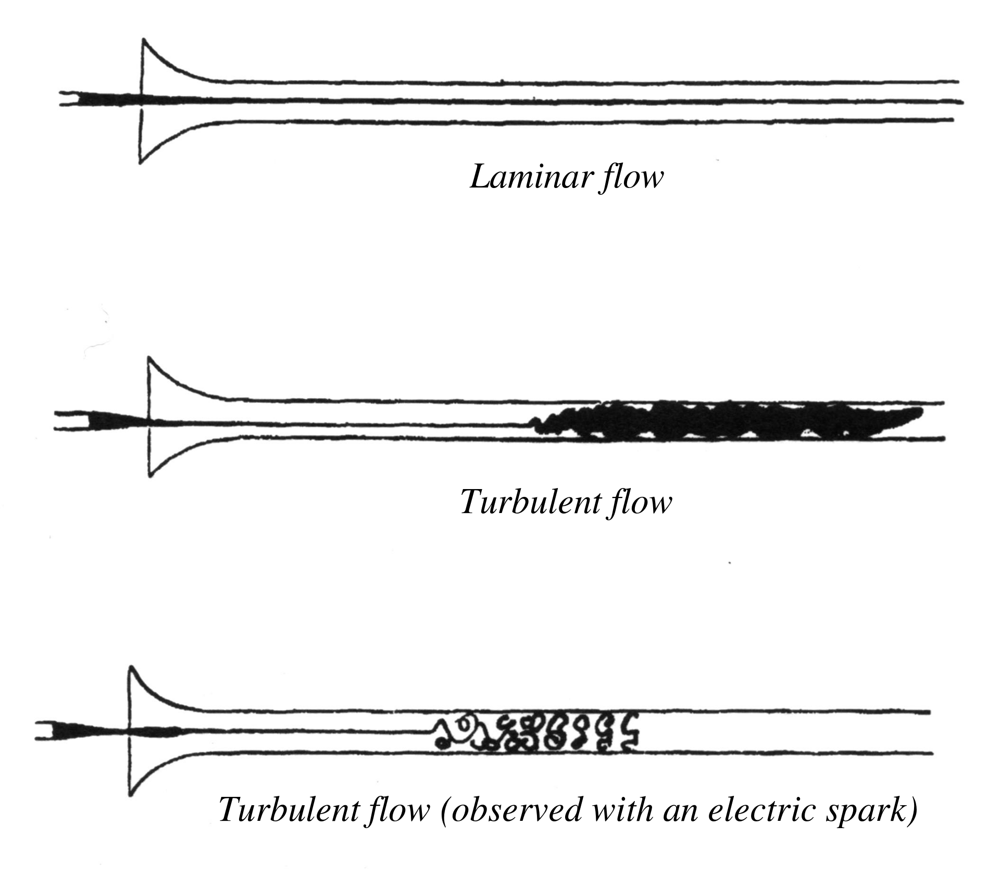
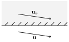
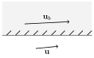

2 The Governing Equations of Fluid Dynamics
From Chapter 1, we now have all of the tools required to derive the Navier-Stokes equations. We will focus here on incompressible flows with constant density, but the general case of conservation of mass for a compressible fluid can be found in the final section of this chapter.
In general, there are a variety of ways to derive the equations of fluid mechanics, some of which are based on integral representations (see Batchelor’s book, or MA4J1 Continuum Mechanics) and some which directly form the required PDEs by a more ad hoc argument. We will take the latter approach. The route chosen is based on considering the conservation of mass and momentum over an infinitesimal cube in the fluid.
2.1 Conservation of Mass
Consider an infinitesimal volume fixed in space (so that it does not follow the fluid). For simplicity, we is choose this to be a cube, with sides of length \ell aligned with a Cartesian axes (see Figure 2.1). We assume the cube’s centre is at {{\boldsymbol{x}}_0} = (x_0, y_0, z_0).


The law of conservation of mass tells us that because we have a fluid with constant density (and therefore \partial_t \rho=0), the total mass flux in through its six sides must be zero: \begin{aligned} 0 &=\ell^2\Big( -\rho u(x_0+\tfrac12\ell,y_0,z_0) + \rho u(x_0-\tfrac12\ell,y_0,z_0) \\ &\hspace{11mm} - \rho v (x,y_0+\tfrac12\ell,z_0) + \rho v(x,y_0-\tfrac12\ell,z_0) \\ &\hspace{11mm} - \rho w(x,y_0,z_0+\tfrac12\ell) + \rho w(x,y_0,z_0-\tfrac12\ell)\Big) \\ &= -\ell^3 \rho \left( \frac{\partial u}{\partial x} +\frac{\partial v}{\partial y} + \frac{\partial w}{\partial z}+O(\ell)\right). \end{aligned} Now, if we assume this has to hold for all cubes as we shrink \ell, we can take the limit and obtain the desired equation for incompressibility: \frac{\partial u}{\partial x} +\frac{\partial v}{\partial y} + \frac{\partial w}{\partial z} = \nabla \cdot {\boldsymbol{v}}=0. \tag{2.1}
2.2 Conservation of Momentum
Here, we will formulate conservation of momentum for a fluid element (which follows the flow), which involves applying Newton’s second law to these material elements. As we already know how to calculate the acceleration using the material derivative, all we require is the forces acting on fluid element. These will split into two contributions - body forces (we will only consider gravitational forces in this course) and internal forces (pressure and stress).
Stress
Stress is a crucial and fundamental concept in continuum mechanics. It is the way that we think about the forces which different parts of a continuum object exert on one another. Pressure is an example of a form of stress that you may be familiar with, but note that not all stresses can be thought of as pressure!
In continuum modelling, a fundamental concept quantifying stresses acting across surfaces in a material (both internal and external) is the stress tensor.
For example, in Cartesian coordinates S_{32}=S_{zy} would be the z-component of stress acting on a face with normal (0,1,0). This encodes a component of ‘shear’ or ‘tangential’ stress, since the force per unit area acts in a different direction to the normal. We will consider cases in which S_{ij}=S_{ji} is symmetric; this is actually a consequence of the balance of linear momentum, but we won’t discuss this further here.
Let us consider forces acting on a infinitesimal cubic fluid element (that follows the fluid) with side length \ell and centre at {\boldsymbol{x}}= (x_0, y_0, z_0); see Figure 2.2. We will start with the x-component of this force which will involve us calculating S_{1j} n_j \delta A (with \delta A=\ell^2) over all six sides of the cube. \begin{aligned} \delta F_1 &= \ell^2 \Big( S_{11}(x_0+\tfrac12\ell,y_0,z_0) - S_{11}(x_0-\tfrac12\ell,y_0,z_0)\\ &\hspace{13mm}+S_{12}(x,y_0+\tfrac12\ell,z_0) - S_{12}(x,y_0-\tfrac12\ell,z_0)\\ &\hspace{18mm}+S_{13}(x,y_0,z_0+\tfrac12\ell) - S_{13}(x,y_0,z_0-\tfrac12\ell)\Big). \end{aligned} Taylor expanding this expression for small \ell and keeping the leading order terms only, we have: \delta F_1 = \ell^3 \left(\frac{\partial S_{11}(x,y,z)}{\partial x} + \frac{\partial S_{12}(x,y,z)}{\partial y} + \frac{\partial S_{13}(x,y,z)}{\partial z} \right) = \ell^3\,\frac{\partial S_{1j}(x,y,z)}{\partial x_j}, where we have used the summation convention (with j the repeated index).
Repeating a similar calculuation for all of the other force components, we have \delta F_i = \ell^3 ~\frac{\partial S_{ij}(x,y,z)}{\partial x_j}. Symbolically, we can write this equation using the divergence of the stress tensor: \delta {\boldsymbol{F}}= \ell^3 ~\nabla\cdot {\boldsymbol{S}}. Just as the divergence turns a vector field into a scalar field, it turns a tensor field into a vector field.
Cauchy’s Momentum Equation
Recall that Newton’s second law states that
“The net force on a material element is equal to its mass times its acceleration.”
In our case, the net force will be composed of internal forces (\delta F_i) and a body force from gravity, which we will choose to align with the z-axis. Denoting the acceleration due to gravity as g and putting together all the elements of our derivation so far, we have: \underbrace{\vphantom{\frac{\partial S_{ij}}{\partial x_j}}(\rho \ell^3)}_{\text{Mass}} \, \underbrace{\vphantom{\frac{\partial S_{ij}}{\partial x_j}}\frac{D v_i}{Dt}}_{\text{Acceleration}} = \underbrace{\ell^3 \, \frac{\partial S_{ij}}{\partial x_j}}_{\text{Force from Stresses}} - \underbrace{\vphantom{\frac{\partial S_{ij}}{\partial x_j}}(\rho \ell^3) g \, \delta_{i3},}_{\text{Gravitational Body Force}} where \delta_{i3}=1 if i=3 and 0 otherwise. Dividing this equation through by the mass term \rho \ell^3, we finally have: \frac{D v_i}{Dt} = \frac 1 \rho \frac{ \partial S_{ij}}{\partial x_j}-g \, \delta_{i3}\qquad\text{or symbolically}\qquad \frac{D {\boldsymbol{v}}}{Dt} = \frac 1 \rho \nabla\cdot{\boldsymbol{S}}-g{\boldsymbol{e}}_z, \tag{2.2} which is called Cauchy’s momentum equation.
The momentum equation is valid for a broad range of continuous media (not only fluids and gases) – e.g. crystals or amorphous solids, and piles of sand or soil (in the continuum limit) – but to make it specifically a fluid equation, one has to specify a particular relevant form of the stress tensor. This particular choice is called a constitutive law, since it tells us what sort of matter constitutes (i.e. makes up) the continuum we are considering.
We will start with the simplest case of an inviscid fluid and after consider the more complex case of a viscous (Newtonian) fluid which is more relevant for small scale flows.
Stress Tensor for an Inviscid fluid
In an inviscid fluid there is no friction acting between fluid elements. The only stress acting is a pressure, which is normal to all surfaces and points inward. Therefore, our particular form of the stress tensor (known as a constitutive relation) is S_{ij} = - p \delta_{ij}.
Substituting into Cauchy’s equation Equation 2.2, we arrive at the Euler equation which describes inviscid fluid flow: \frac{D v_i}{Dt} = -\frac 1 \rho \frac{\partial p}{\partial x_i} -g \, \delta_{i3}\qquad\text{or symbolically}\qquad \frac{D {\boldsymbol{v}}}{Dt} = -\frac 1 \rho \nabla p-g{\boldsymbol{e}}_z. \tag{2.3}
Notably, in the absence of gravitational forces we can see clearly that gradients in pressure (\nabla p) accelerate fluid elements from regions of high to low pressure. This is because at any point the pressure is the same in all directions, so there is only a net force on a fluid element if the pressure varies spatially.
Stress Tensor for a Viscous Fluid
To describe a viscous fluid, we separate the pressure contribution to the stress tensor from the remaining terms — the latter will be associated with an internal friction (viscosity): S_{ij} = - p \delta_{ij} + \sigma_{ij}, \tag{2.4} where \sigma_{ij} is called the viscous stress tensor. Note that different texts may use alternative symbols for the stress tensor, viscous stress tensor and rate of strain tensors.
In the previous Chapter, we saw that it is the rate of strain tensor e_{ij} which describes the rate of deformation of the fluid, and it is this which generates the viscous stress \sigma_{ij}. A constitutive relation provides the missing link between \sigma_{ij} and e_{ij}. When the relationship between these is linear, the fluid is called Newtonian.
For an incompressible flow (e_{kk}=0), this simplifies considerably to \sigma_{ij} = 2~ \mu ~e_{ij} \qquad\text{so that}\qquad S_{ij} = - p~\delta_{ij} + \mu\left(\frac{\partial v_i}{\partial x_j} + \frac{\partial v_j}{\partial x_i} \right). \tag{2.5} We see that for an incompressible fluid (e_{kk}=0) the pressure p = -\text{$\frac{1}{3}$}(S_{11} + S_{22} + S_{33}) is the mean of the three normal stresses at a point.
The dynamic viscosity \mu (units kg m^{-1} s^{-1}) is the coefficient of proportionality between the rate of strain tensor and the stress tensor which describes how easily a fluid moves under a shear force. Fluids of high viscosity, like honey, flow less easily than those of low viscosity, like water (the density of each of these is similar).
The flow of incompressible Newtonian fluids, i.e. those satisfying Equation 2.5, will be the focus of this course and will allow us to consider a huge range of phenomena. However, there are many cases in which non-Newtonian behaviour is encountered so that more complex constitutive relations than Equation 2.5 are required (e.g. the flow of toothpaste or mayonnaise), but these are beyond the scope of this course. Non-Newtonian fluids can create weird and wonderful flows, see for example the following videos.
Substituting Equation 2.5 into Cauchy’s equation Equation 2.2, we obtain: \frac{D v_i}{Dt} = - \frac 1 \rho \frac{\partial p}{\partial x_i} + \nu \frac{\partial^2 v_i}{\partial x_j^2} -g\delta_{i3} \qquad\text{or symbolically}\qquad \frac{D{\boldsymbol{v}}}{Dt} = - \frac 1 \rho \nabla p + \nu \nabla^2 {\boldsymbol{v}}-g{\boldsymbol{e}}_z, \tag{2.6} where \nu = \mu /\rho is the (assumed constant here) kinematic viscosity coefficient (units m^{2} s^{-1}, as it is a diffusion coefficient for momentum transfer).
2.3 Summary: The Governing Equations
Our main focus will be on incompressible flow with density constant. In this case, our fundamental governing equation are:
In this case, Equation 2.7 forms a closed system, independent of the thermodynamic properties of the fluid. In the general case of d=3, we have 4 equations for 4 unknowns at each point in space and time, the pressure field p and the velocity field, {\boldsymbol{v}}. Recall the first equation comes from conservation of mass, while the second is a form of Newton’s Second Law.
2.4 Controlling Flow Parameters
In many cases, certain terms in the Navier–Stokes equations associated with particular physical effects are negligible. This means our system of equations can be simplified, sometimes vastly. It is only with these simplifications that we are able to make progress using mathematical analysis, giving great insight into numerous flow configurations, without turning to brute-force computational approaches.
Below we will compare the magnitude of different terms in the Navier–Stokes equations to find the Reynolds number, which is an examples of a dimensionless number. The size of the Reynolds number will give an indication of whether the flow can be regarded as viscous or inviscid. The key point here is that this parameter is dimensionless, so that it is meaningful to talk about its magnitude in absolute terms. When a quantity is dimensional, say a length, it makes no sense to say whether it is large or small, as it depends on what we are comparing it to (e.g. a pen is large when compared to the atomic scale, but small compared to that of the universe). In other words, it is only when we make this length dimensionless by considering it relative to a characteristic length of the system, that we are able to establish whether that quantity is large or small. The same holds for the terms in our equations, it only makes sense to say whether a term is large relative to another. Here, we have only touched on the extremely useful area of dimensional analysis.
Reynolds number
Consider a flow whose velocity field varies over a characteristic length L with a typical velocity magnitude (i.e. speed) U. For example, for the air flow around an aeroplane, a typical scale for L could be the wing span and a typical velocity magnitude would be the speed at which the plane flies U, but often it’s not so obvious to establish which L and U to pick. For what values of L, U and kinematic viscosity coefficient \nu can one neglect viscous forces? For what values of these parameters can one ignore the inertial forces associated with fluid particle acceleration?
In steady flow, the typical value of the fluid particle acceleration is |({\boldsymbol{v}}\cdot \nabla) {\boldsymbol{v}}| \sim \frac{U^2}{L}, whereas the typical value of the viscous term is |\nu \nabla^2 {\boldsymbol{v}}| \sim \frac{\nu U}{L^2}. Note these terms have the same units (or dimensions) since they appear as different terms in the Navier–Stokes equation. The ratio of these two typical values is the Reynolds number, i.e. \mathrm{Re}=\frac{U^2/L}{\nu U/L} = \frac {UL}{\nu}.
Therefore, it appears one can neglect the influence of viscosity if \mathrm{Re}\gg 1 (inviscid flow), whereas the fluid particle acceleration term can be ignored if \mathrm{Re}\ll 1 (Stokes flow or ‘creeping flow’). The latter is associated with laminar flow, and is critical for small-scale flows (small L) such as those occurring in microfluidics (e.g. look up ‘lab-on-a-chip’ devices), whilst the former can create laminar or turbulent flows and are commonly observed all around us (e.g. weather). If \mathrm{Re}\sim 1, then both effects are approximately in balance, and it is much harder to simplify the equations as a result.
In fact, things are more complex: even if \mathrm{Re}\gg 1 when estimated based on the size L of the flow, the local length-scale in some parts of the flow may get much smaller and, therefore, the local \mathrm{Re} may get strongly reduced, so that the flow is no longer inviscid. This situation is typical for thin layers close to the solid boundaries—the so-called boundary layers and in wakes behind moving bodies.
This number is named after Osborne Reynolds (1842-1912) who realised that this combination of dimensional parameters controls the transition from a laminar to turbulent flow in a pipe. The apparatus used to conduct these experiments, conducted in Manchester, is shown in Figure 2.5.


Stokes Flow
When the Reynolds number is small, \mathrm{Re}\ll1, viscous (frictional) forces dominate inertial effects captured by the acceleration term on the left-hand side of the Navier–Stokes equations. Neglecting the acceleration terms, we obtain the model 0 = - \frac 1{\rho} \nabla p + \nu\nabla^2{\boldsymbol{v}}- g{\boldsymbol{e}}_z,\qquad \nabla\cdot{\boldsymbol{v}}=0. \tag{2.8} This is commonly referred to as ‘Stokes flow’, ‘Creeping Flow’ or ‘Viscous-Dominated flow’ and is often encountered in small-scale flows (where L is small, for example on the order of micrometres). The study, and mathematical analysis, of such flows is a topic in its own right which we will have little opportunity to look into. A quick read of E.M.Purcell’s ‘Life at Low Reynolds Number’, concerned with how small organisms are able to swim, will give an insight into this counter-intuitive world, as does the following video.
Similarity
Knowing the parameters that govern a flow allows us to unlock powerful methods of similarity. For example, if we consider incompressible flow and assume that gravitational effects are negligible, then the sole dimensionless parameter formed from the Navier–Stokes equations is the Reynolds number. If we then consider two different flows which are geometrically similar and have the same boundary conditions, then at the same Reynolds numbers the fluid flows will be identical.
It is this phenomenon which allows small-scale models to be built and tested before constructing full scale models; this is common in shipbuilding: if the flows are dynamically and geometrically similar, then the flows will be too. For example, if the model is reduced in size by a factor of 10 (L\rightarrow 0.1L), then one could increase the characteristic speed by a factor of 10 (U\rightarrow 10U) to ensure \mathrm{Re} remains unchanged. Another alternative is to alter the viscosity by changing the fluid used in an experiment; here one would need to reduce the viscosity by a factor of 10, which may be harder to do!
2.5 Boundary and initial conditions
The Navier–Stokes equations (and variants) are partial differential equations (PDEs). As is usual for PDEs, in order to find a unique solution one has to specify appropriate boundary and initial conditions.
Initial conditions
The set of relevant fields must be specified at t=0 at each point {\boldsymbol{x}} in the domain occupied by the fluid, {\boldsymbol{x}}\in V \subset {\mathbb{R}}^d. For incompressible fluids one only has to specify the initial velocity field {\boldsymbol{v}}_0 (as there are no time derivatives on \rho in this case) {\boldsymbol{v}}({\boldsymbol{x}},t=0) = {\boldsymbol{v}}_0. Obviously, such an initial velocity field must satisfy relevant boundary conditions (discussed below) and should be divergence-free.
Boundary conditions at walls
The number of boundary conditions required depends on the bulk equations and their form is determined by the properties of the boundaries (i.e. the physics at the boundary). The two choices discussed below are illustrated in Figure 2.6.


Viscous Fluids: No slip
At solid impenetrable boundaries, it has been found empirically that in many cases the fluid velocity at the boundary \partial { V} of the retaining volume { V} adjusts itself to the boundary’s velocity {\boldsymbol{v}}_b: this is the famous no-slip boundary condition: {\boldsymbol{v}}({\boldsymbol{x}},t) = {\boldsymbol{v}}_b ({\boldsymbol{x}},t), \quad {\boldsymbol{x}}\in \partial { V}. \tag{2.9}
Inviscid Fluids: Free slip
For inviscid fluids, where one only has first derivatives of fluid velocity (no \nabla^2{\boldsymbol{v}} term), one can only enforce inpenetrability of the boundary, i.e. that the normal to the boundary velocity component has to match to the one of the boundary, whereas the parallel velocity component remains arbitrary, since the fluid can slip freely along the boundary in the absence of internal friction. This is the so-called free-slip boundary conditions: {\boldsymbol{v}}^\perp ({\boldsymbol{x}},t) = {\boldsymbol{v}}^\perp_{b} ({\boldsymbol{x}},t), \quad {\boldsymbol{x}}\in \partial { V}. \tag{2.10}
These conditions often do not ensure that the flow solution is unique: as we will see later, there are typically infinitely many solutions to the Euler equations satisfying the free-slip boundary conditions, and one has to seek an additional prescription on how to select the physically relevant solution out of the infinite set. This uncertainty and non-uniqueness is a “tragic” consequence of the drastic idealisation of assuming the fluid to be inviscid. In reality, no matter how high the Reynolds number is, there is always a thin layer of fluid close to the boundary where viscosity is important and must be taken into account: this is the so-call boundary layer, which we will not have time to consider.
2.6 Modelling Frameworks
The range of phenomena which the Navier–Stokes equations combined with no-slip at solid surfaces can describe is truly remarkable. However, there are also many cases in which they breakdown - for example, in the flow of non-Newtonian fluids or as one approaches small scales where additional physics comes into play (e.g. thermal motion).
We may wonder how to model flows in which \ell/L is not small, by going to a more well resolved theory than continuum mechanics. Unlike in continuum mechanics, where the Navier–Stokes equations can be (remarkably) used for liquid and gases, for small scale flows, where L\sim \ell, different options exist. Notably, for gas flows there is also the possibility that \ell becomes much larger, as is the case for re-entrant space craft where the atmosphere is significantly more rarefied.
One option is molecular dynamics, where individual molecules are evolved via Newton’s laws of motion under the action of a potential, that is typically short range repulsive (so molecules don’t overlap) and long-range attractive (creating cohesion in the fluid). Such techniques can offer us great insight when flows are on molecular scales (e.g. nm), but to do so we must have accurate potentials to describe the motion. Typically, in the fluid dynamics community relatively simple potentials are used (e.g. Lennard Jones, or some water models) and the focus is usually not on the chemical nature of the fluid, but rather its flow properties (viscosity, density, etc). The following video shows the coalescence of water nanodrops.
For the case of gases, one can also use molecular dynamics, but due to its often dilute nature one can develop statistical approaches that rely on the fact that binary collisions between molecules are their most likely form of interaction (i.e. there is no attractive force considered). The result is the Boltzmann equation (in the field of rarefied gas flows or kinetic theory) which provides a partial differential equation for the particle distribution function f=f({\boldsymbol{x}},{\boldsymbol{c}},t) which gives the probability of a molecule having velocity {\boldsymbol{c}} at position {\boldsymbol{x}} and time t. Notably, the Boltzmann equation sits in a seven-dimensional space (3 spatial, 3 velocity, 1 time), in contrast to continuum mechanics where is 4-dimensional (3 spatial, 1 time), meaning that computational solutions become far more costly. The usual solution method is so-called direct simulation Monte-Carlo (DSMC) although other approaches are also used.
There is a huge rich variety of other modelling frameworks including density functional theory (acting below molecular dynamics), coarse grained molecular models (e.g. dissipative particle dynamics), extensions of the Boltzmann equation (e.g. the Enskog equation for less dilute gases), fluctuating hydrodynamics (that puts thermal fluctuations into continuum mechanics) and models that themselves can be considered averages of the Navier–Stokes equations (e.g. Brinkmann or Darcy’s equation of flow through porous media).
A significant strand of fluids research at Warwick is concerned with models that go ‘beyond’ the Navier–Stokes (–Fourier) paradigm and yet remain broadly within the same PDE framework. An instructive example comes from the kinetic theory of gases where the Navier–Stokes equations can be derived from the Boltzmann equation. However, what one can see clearly in this derivation, e.g. using Grad’s method of moments to derive macroscopic equations from the Boltzmann equation, is that the Navier–Stokes equations are just the start of the story. At higher orders one can have slip between a gas and a solid and more complex constitutive laws appear (leading to larger systems of equations) - more of the story is covered in PX921 Micro & Nano Flows across Scales. Notably, however, as one may expect, many of the conservation laws remain unchanged.
2.7 Compressible Fluids*
This section is extension material on compressible fluids.
Conservation of mass
Here we will consider conservation of mass for a compressible fluid in which density is no longer assumed constant.
Consider an infinitesimal volume fixed in space (i.e. it does not follow the fluid), which for simplicity is chosen to be a cube, with sides of length d aligned with a Cartesian axes (see Figure 2.1), so that its bottom corner is at {\boldsymbol{x}}_0 = (x_0, y_0, z_0).
The law of conservation of mass tells us that the rate of increase of fluid mass (volume d^3 times rate of change of density \partial_t \rho) inside this cube is equal to the total mass flux in through its six sides: \begin{aligned} d^3 \frac{\partial\rho}{\partial t} &= d^2 \Big[-\rho(x_0+d,y,z) u(x_0+d,y,z) + \rho(x_0,y,z) u(x_0,y,z) \\ &\qquad\qquad- \rho(x,y_0+d,z) v (x,y_0+d,z) + \rho(x,y_0,z) v(x,y_0,z)\\ &\qquad\qquad- \rho(x,y,z_0+d) w(x,y,z_0+d) + \rho(x,y,z_0) w(x,y,z_0)\Big] \end{aligned}
Dividing both sides by d^3, in the limit of small d we get the desired equation: \frac{\partial\rho}{\partial t} + \frac{\partial (\rho u)}{\partial x} +\frac{\partial (\rho v)}{\partial y}+\frac{\partial (\rho w)}{\partial z} = \frac{\partial\rho}{\partial t} + \nabla \cdot (\rho {\boldsymbol{v}}) =0. \tag{2.11} Now that the equation is in vector form, we can apply it to any coordinate system (despite being derived in Cartesian).
Newton’s Second Law
The derivation of Cauchy’s equation Equation 2.2 remains valid for compressible flow, but the consitutive relation for the Cauchy stress tensor will change. In such cases, the most general isotropic form of an isotropic constitutive relation determined as a linear function of the rate of strain tensor e_{ij} is S_{ij} = 2 \mu \underbrace{\bigg(e_{ij} - \frac 1 3 \delta_{ij} \, e_{kk} \bigg)}_{\text{Rate of shear strain}}\quad + \quad \xi\hspace{-6mm}\underbrace{\vphantom{\bigg(}\, \, e_{kk}\delta_{ij},\,}_{\text{Rate of volumetric strain}} \tag{2.12} where \mu is the shear viscosity coefficient, \xi is the bulk viscosity coefficient, and e_{kk} = e_{11}+e_{22}+e_{33}= \nabla \cdot {\boldsymbol{v}} is the trace of tensor e_{ij}.
Other considerations
In general, for compressible flows we will also require an energy balance relation and an equation of state specifying the properties of the medium. However, there is a simpler class of flows where we can assume p=p(\rho) to close the system, known as barotropic flows, where for the simplest case of isentropic gas we have p \propto {\rho^\gamma} \tag{2.13} where \gamma is a constant whose value depends on the properties of the gas.
For many cases, especially for liquids, we will see that the velocity is approximately divergence-free, so that conservation of mass is simply \nabla\cdot{\boldsymbol{v}}=0. \tag{2.14} In this case \frac{1}{\rho}\frac{D \rho}{Dt} =0.
Initial and boundary conditions
In compressible fluids, one has to additionally specify the initial density and entropy, or chose another couple of thermodynamic fields which would be most relevant to the specific problem (temperature, pressure, etc.).